在这里，我们将看看R中最有用的数据结构，并在一些虚构的例子中使用它们，以更好地掌握它们的语法和构造。我们将在这里介绍的主要数据结构包括:
- 向量
- 阵列和矩阵
- 列表
- 数据帧
这些数据结构在R内部被广泛使用，并且被各种R包和函数使用，包括我们将在后续章节中使用的机器学习函数和算法。因此，了解如何使用这些数据结构来有效地处理数据是至关重要的。
正如我们在前面的章节中简单提到的，向量是r中最基本的数据类型。我们使用向量来表示任何东西，无论是输入还是输出。我们之前看到了如何创建向量并对其应用数学运算。我们将在这里看到更多的例子。
在这里，我们将看看初始化向量的方法，其中一些我们之前也做过，使用像:这样的运算符和像c这样的函数。在下面的代码片段中，我们将使用seq函数族以不同的方式初始化向量。
> c(2.5:4.5, 6, 7, c(8, 9, 10), c(12:15))
[1] 2.5 3.5 4.5 6.0 7.0 8.0 9.0 10.0 12.0 13.0 14.0 15.0
> vector("numeric", 5)
[1] 0 0 0 0 0
> vector("logical", 5)
[1] FALSE FALSE FALSE FALSE FALSE
> logical(5)
[1] FALSE FALSE FALSE FALSE FALSE
> # seq is a function which creates sequences
> seq.int(1,10)
[1] 1 2 3 4 5 6 7 8 9 10
> seq.int(1,10,2)
[1] 1 3 5 7 9
> seq_len(10)
[1] 1 2 3 4 5 6 7 8 9 10
我们可以对向量进行的最重要的操作之一是对向量进行子集化和索引，以访问特定的元素，这在我们希望仅对特定的数据点运行一些代码时非常有用。下面的例子展示了一些索引和子集向量的方法:
> vec <- c("R", "Python", "Julia", "Haskell", "Java", "Scala")
> vec[1]
[1] "R"
> vec[2:4]
[1] "Python" "Julia" "Haskell"
> vec[c(1, 3, 5)]
[1] "R" "Julia" "Java"
> nums <- c(5, 8, 10, NA, 3, 11)
> nums
[1] 5 8 10 NA 3 11
> which.min(nums) # index of the minimum element
[1] 5
> which.max(nums) # index of the maximum element
[1] 6
> nums[which.min(nums)] # the actual minimum element
[1] 3
> nums[which.max(nums)] # the actual maximum element
[1] 11
现在我们来看看如何给向量命名。这基本上是R中的一个很棒的特性，在这里你可以标记向量中的每个元素，使它更易读或者更容易解释。有两种方法可以做到这一点，如下例所示:
> c(first=1, second=2, third=3, fourth=4, fifth=5)
输出:
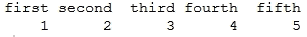
> positions <- c(1, 2, 3, 4, 5)
> names(positions)
NULL
> names(positions) <- c("first", "second", "third", "fourth", "fifth")
> positions
输出:
> names(positions)
[1] "first" "second" "third" "fourth" "fifth"
> positions[c("second", "fourth")]
输出:
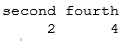
向量是一维的数据结构，这意味着它们只有一个维度，我们可以使用length属性得到它们所包含的元素数量。请记住，数组在其他编程语言中也可能有类似的含义，但在R中，它们的含义略有不同。基本上，R中的数组是保存多维数据的数据结构。矩阵只是具有二维的一般数组的特例，即由属性rows和columns表示。让我们来看看下面的代码片段中的一些例子。
首先我们将创建一个三维的数组。现在很容易在你的屏幕上显示两个维度，但是要更进一步，R转换数据有特殊的方法。以下示例显示了R如何在每个维度中填充数据(列优先),并显示了4x3x3数组的最终输出:
> three.dim.array <- array(
+ 1:32, # input data
+ dim = c(4, 3, 3), # dimensions
+ dimnames = list( # names of dimensions
+ c("row1", "row2", "row3", "row4"),
+ c("col1", "col2", "col3"),
+ c("first.set", "second.set", "third.set")
+ )
+ )
> three.dim.array
输出:
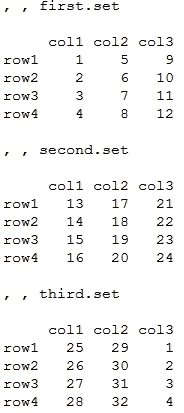
就像我前面提到的，矩阵只是数组的一个特例。我们可以使用matrix函数创建一个矩阵，如下例所示。请注意，我们使用参数byrow在矩阵中按行填充数据，而不是在任何数组或矩阵中使用R的默认按列填充。ncol和nrow参数分别代表列数和行数。
> mat <- matrix( + 1:24, # data + nrow = 6, # num of rows + ncol = 4, # num of columns + byrow = TRUE, # fill the elements row-wise + ) > mat
输出:
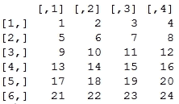
就像我们命名的 vectors和被访问的元素名称一样，将在下面的代码片段中执行类似的操作。您已经在前面的例子中看到了dimnames参数的使用。让我们再看一些例子如下:
> dimnames(three.dim.array)
输出:
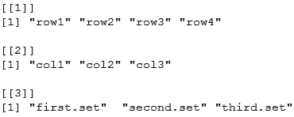
> rownames(three.dim.array)
[1] "row1" "row2" "row3" "row4"
> colnames(three.dim.array)
[1] "col1" "col2" "col3"
> dimnames(mat)
NULL
> rownames(mat)
NULL
> rownames(mat) <- c("r1", "r2", "r3", "r4", "r5", "r6")
> colnames(mat) <- c("c1", "c2", "c3", "c4")
> dimnames(mat)
输出:
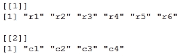
> mat
输出:
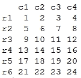
要访问与数组和矩阵相关的维度的详细信息，有一些特殊的函数。下面的例子说明了同样的情况:
> dim(three.dim.array) [1] 4 3 3 > nrow(three.dim.array) [1] 4 > ncol(three.dim.array) [1] 3 > length(three.dim.array) # product of dimensions [1] 36 > dim(mat) [1] 6 4 > nrow(mat) [1] 6 > ncol(mat) [1] 4 > length(mat) [1] 24
许多机器学习和优化算法将矩阵作为输入数据进行处理。在下一节中，我们将看一些最常见的矩阵运算的例子。
我们首先初始化两个矩阵，然后查看使用函数组合这两个矩阵的方法，例如返回向量的c、rbind通过rows,组合矩阵，以及通过列执行相同操作的cbind。
> mat1 <- matrix(
+ 1:15,
+ nrow = 5,
+ ncol = 3,
+ byrow = TRUE,
+ dimnames = list(
+ c("M1.r1", "M1.r2", "M1.r3", "M1.r4", "M1.r5")
+ ,c("M1.c1", "M1.c2", "M1.c3")
+ )
+ )
> mat1
输出:
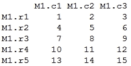
> mat2 <- matrix(
+ 16:30,
+ nrow = 5,
+ ncol = 3,
+ byrow = TRUE,
+ dimnames = list(
+ c("M2.r1", "M2.r2", "M2.r3", "M2.r4", "M2.r5"),
+ c("M2.c1", "M2.c2", "M2.c3")
+ )
+ )
> mat2
输出:
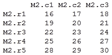
> rbind(mat1, mat2)
输出:
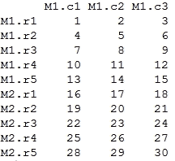
> cbind(mat1, mat2)
输出:
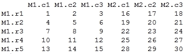
> c(mat1, mat2)
输出:
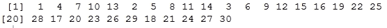
现在我们来看看可以在矩阵上进行的一些重要的算术运算。根据下面的语法，它们中的大多数都是不言自明的:
> mat1 + mat2 # matrix addition
输出:
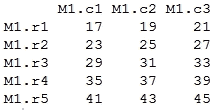
> mat1 * mat2 # element-wise multiplication
输出:

> tmat2 <- t(mat2) # transpose > tmat2
输出:
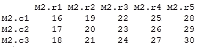
> mat1 %*% tmat2 # matrix inner product
输出:
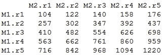
> m <- matrix(c(5, -3, 2, 4, 12, -1, 9, 14, 7), nrow = 3, ncol = 3) > m
输出:
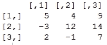
> inv.m <- solve(m) # matrix inverse > inv.m
输出:
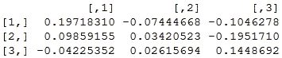
> round(m %*% inv.m) # matrix * matrix_inverse = identity matrix
输出:

列表是向量的一种特殊情况，其中向量中的每个元素可以是不同类型的数据结构，甚至是简单的数据类型。如果您以前使用过它，它在某些方面类似于Python编程语言中的列表，其中列表指示不同类型的元素，并且每个元素在列表中都有特定的索引。在R中，列表的每个元素可以简单到一个元素，也可以复杂到一个矩阵、一个函数，甚至一个字符串向量。
在下面的例子中，我们将从开始，看看一些创建和初始化列表的常用方法。除此之外，我们还将看看如何访问这些列表元素来进行进一步的计算。请记住，列表中的每个元素都可以是简单的原始数据类型，甚至可以是复杂的数据结构或函数。
> list.sample <- list(
+ 1:5,
+ c("first", "second", "third"),
+ c(TRUE, FALSE, TRUE, TRUE),
+ cos,
+ matrix(1:9, nrow = 3, ncol = 3)
+ )
> list.sample
输出:
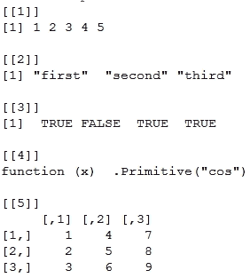
> list.with.names <- list(
+ even.nums = seq.int(2,10,2),
+ odd.nums = seq.int(1,10,2),
+ languages = c("R", "Python", "Julia", "Java"),
+ cosine.func = cos
+ )
> list.with.names
输出:

> list.with.names$cosine.func
function (x) .Primitive("cos")
> list.with.names$cosine.func(pi)
[1] -1
>
> list.sample[[4]]
function (x) .Primitive("cos")
> list.sample[[4]](pi)
[1] -1
>
> list.with.names$odd.nums
[1] 1 3 5 7 9
> list.sample[[1]]
[1] 1 2 3 4 5
> list.sample[[3]]
[1] TRUE FALSE TRUE TRUE
现在，我们将在下面的示例中看看如何将几个列表组合成一个单个列表:
> l1 <- list(
+ nums = 1:5,
+ chars = c("a", "b", "c", "d", "e"),
+ cosine = cos
+ )
> l2 <- list(
+ languages = c("R", "Python", "Java"),
+ months = c("Jan", "Feb", "Mar", "Apr"),
+ sine = sin
+ )
> # combining the lists now
> l3 <- c(l1, l2)
> l3
输出:
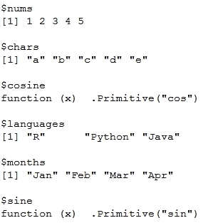
很容易将列表转换成向量，反之亦然。下面的例子展示了我们实现这一目标的一些常用方法:
> l1 <- 1:5 > class(l1) [1] "integer" > list.l1 <- as.list(l1) > class(list.l1) [1] "list" > list.l1
输出:
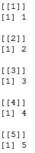
> unlist(list.l1) [1] 1 2 3 4 5
数据框是一种特殊的数据结构，通常用于存储数据表或电子表格形式的数据，其中每一列表示一个特定的属性或字段，行由这些列的特定值组成。这种数据结构在处理通常具有大量字段和属性的数据集时非常有用。
我们可以使用data.frame函数轻松创建数据帧。我们将看一些下面的例子来说明一些受欢迎的超级英雄也是如此:
> df <- data.frame(
+ real.name = c("Bruce Wayne", "Clark Kent", "Slade Wilson", "Tony Stark", "Steve Rogers"),
+ superhero.name = c("Batman", "Superman", "Deathstroke", "Iron Man", "Capt. America"),
+ franchise = c("DC", "DC", "DC", "Marvel", "Marvel"),
+ team = c("JLA", "JLA", "Suicide Squad", "Avengers", "Avengers"),
+ origin.year = c(1939, 1938, 1980, 1963, 1941)
+ )
> df
输出:
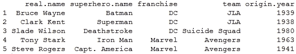
> class(df) [1] "data.frame" > str(df)
输出:
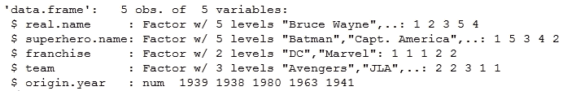
> rownames(df) [1] "1" "2" "3" "4" "5" > colnames(df)
输出:
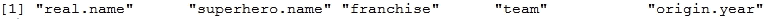
> dim(df) [1] 5 5
str函数详细讲述了数据帧的结构，我们可以看到数据帧中每一列的数据细节。R base中有很多现成的数据集，你可以直接加载并开始使用。其中一个如下所示。mtcars数据集包含各种汽车的信息，这些信息摘自1974年的美国汽车趋势杂志。
> head(mtcars) # one of the datasets readily available in R
输出:
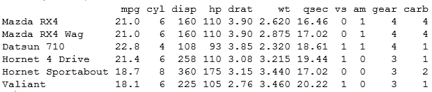
我们可以对数据帧进行很多操作，比如合并、组合、切片和转置数据帧。我们将在以下示例中查看一些重要的数据框操作。
使用简单的索引和函数(如subset)来索引和子集化数据框中的特定数据非常容易。
> df[2:4,]
输出:
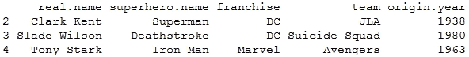
> df[2:4, 1:2]
输出:
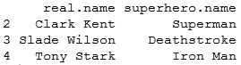
> subset(df, team=="JLA", c(real.name, superhero.name, franchise))
输出:
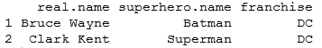
> subset(df, team %in% c("Avengers","Suicide Squad"), c(real.name, superhero.name, franchise))
输出:
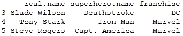
> df1 <- data.frame(
+ id = c('emp001', 'emp003', 'emp007'),
+ name = c('Harvey Dent', 'Dick Grayson', 'James Bond'),
+ alias = c('TwoFace', 'Nightwing', 'Agent 007')
+ )
>
> df2 <- data.frame(
+ id = c('emp001', 'emp003', 'emp007'),
+ location = c('Gotham City', 'Gotham City', 'London'),
+ speciality = c('Split Persona', 'Expert Acrobat', 'Gadget Master')
+ )
> df1
输出:
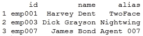
> df2
输出:
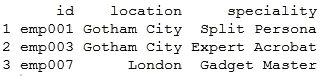
> rbind(df1, df2) # not possible since column names don't match Error in match.names(clabs, names(xi)) : names do not match previous names > cbind(df1, df2)
输出:
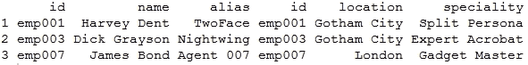
> merge(df1, df2, by="id")
输出:
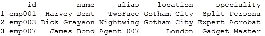
从前面的操作可以明显看出，rbind和cbind的工作方式与我们之前看到的数组和矩阵的工作方式相同。但是，merge允许您以连接关系数据库中各种表的相同方式合并数据框。